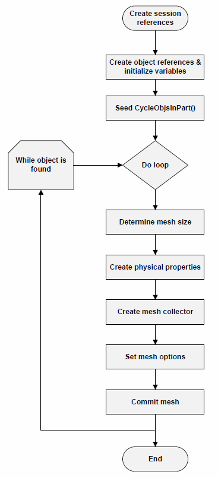

In this activity, you will create an NX Open.CAE program that applies a 2D mesh to all bodies in a part, using CQUAD4 elements. The program sets the element size; creates a collector, and a physical property table. The behavior of this program differs from the default mesher in that it creates a mesh collector for each body.
This flowchart details the NX Open program flow.
